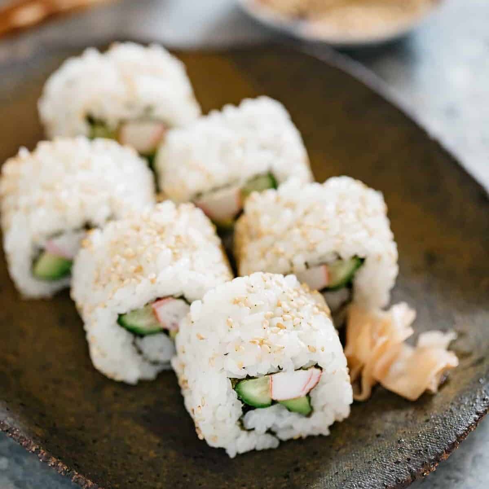

California Sushi Rolls?

What are California Sushi Rolls
Sushi is a Japanese dish of prepared vinegared rice, usually with some sugar and salt, accompanied
by a variety of ingredients, such as seafood, often raw, and vegetables. Styles of sushi and its
presentation vary widely, but the one key ingredient is "sushi rice", also referred to as shari, or sumeshi
Ingredients
- 2 cups sushi rice, rinsed and drained
- 2 cups water
- 1/4 cup rice vinegar
- 2 tablespoons sugar
- 1/2 teaspoon salt
- 2 tablespoons sesame seeds, toasted
- 2 tablespoons black sesame seeds
- Bamboo sushi mat
- 8 nori sheets
- 1 small cucumber, seeded and julienned
- 3 ounces imitation crabmeat sticks, julienned
- 1 medium ripe avocado, peeled and julienned
- Optional: Reduced-sodium soy sauce, prepared wasabi and pickled ginger slices
Steps:
- In a large saucepan, combine rice and water; let stand for 30 minutes. Bring to a boil. Reduce heat to low;
cover and simmer for 15-20 minutes or until water is absorbed and rice is tender. Remove from the heat.
Let stand, covered, for 10 minutes.
- Meanwhile, in small bowl, combine the vinegar, sugar and salt, stirring until sugar is dissolved.
- Transfer rice to a large shallow bowl; drizzle with vinegar mixture. With a wooden paddle or spoon, stir
rice with a slicing motion to cool slightly. Cover with a damp cloth to keep moist. (Rice mixture may be made
up to 2 hours ahead and stored at room temperature, covered with a damp towel. Do not refrigerate.)
- Sprinkle toasted and black sesame seeds onto a plate; set aside. Place sushi mat on a work surface so mat
rolls away from you; line with plastic wrap. Place 3/4 cup rice on plastic. With moistened fingers,
press rice into an 8-in. square. Top with 1 nori sheet.
-
Arrange a small amount of cucumber, crab and avocado about 1-1/2 in. from bottom edge of nori sheet.
Roll up rice mixture over filling, using the bamboo mat to lift and compress the mixture while rolling;
remove plastic wrap as you roll.
-
Remove mat; roll sushi rolls in sesame seeds. Cover with plastic wrap. Repeat with remaining ingredients
to make 8 rolls. Cut each into 8 pieces. Serve with soy sauce, wasabi and ginger slices if desired.